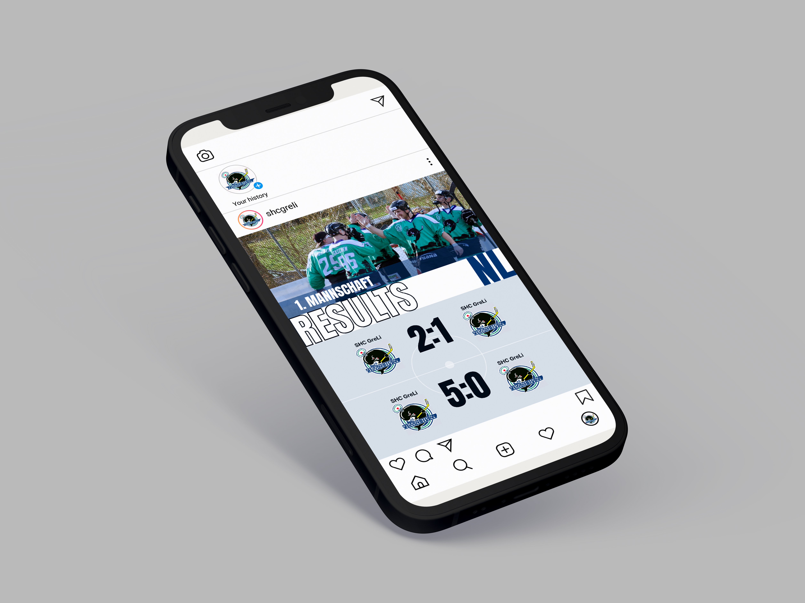

Social Media · 2026
Social Media,
aber mit System.
Für den SHC GreLi entwickelte ich ein flexibles Social-Media-System für Match- und Turnierposts. Ziel war ein einheitlicher Auftritt, der sich im Vereinsalltag schnell und einfach anpassen lässt. Dafür gestaltete ich vier Canva-Templates für Vorschauen und Resultate, die trotz unterschiedlicher Inhalte klar zusammengehören.

Ergebnisse